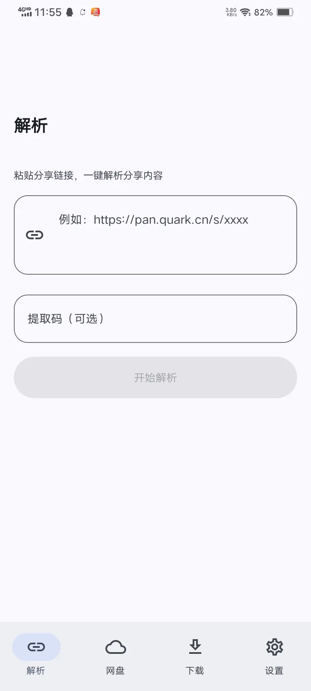
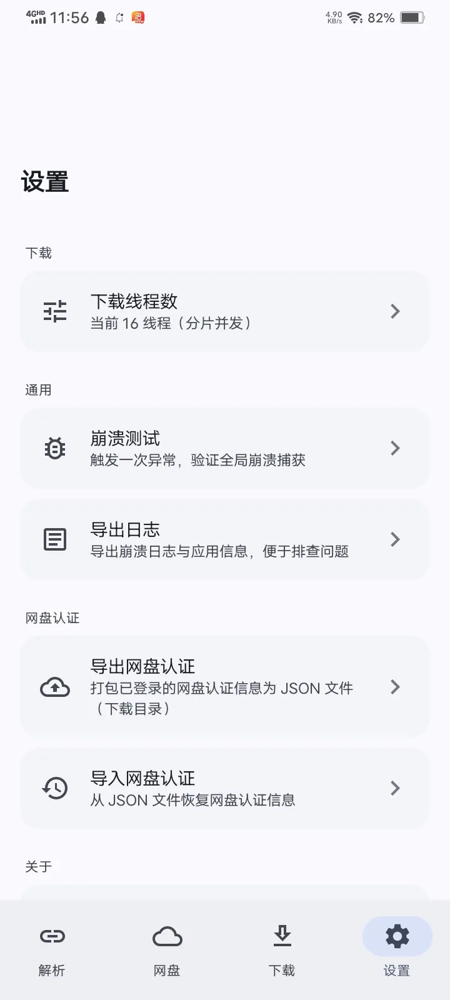

网盘分享链接解析与高速下载
云取（YunGet）把分享链接变成文件：粘贴链接即可解析、浏览、取直链，再用内置的多线程引擎高速下载。凭据加密留在本机，不经过第三方服务器。
支持平台
| 网盘 | 登录方式 | 能做什么 |
|---|---|---|
| 夸克网盘 | 网页登录 | 解析、浏览目录、取直链、下载 |
| UC 网盘 | 网页登录 | 解析、浏览目录、取直链、下载 |
| 迅雷网盘 | 账号密码 / 短信 | 解析、取直链；取链后清理临时转存 |
| 百度网盘 | 网页登录 | 解析、取直链；**不推荐**，可能触发风控 |
| 123 云盘 | 网页登录 | 解析、下载 |
| 139 网盘（和彩云） | 网页登录 | 解析、下载 |
| 115 网盘 | 应用内登录页 | 解析、下载 |
| 光鸭云盘 | 应用内登录页 | 解析、下载 |
| 蓝奏云 | 网页登录 | 解析、下载 |
| 蓝奏云优享版 | 账号密码 | 解析、下载 |
能做什么
分享链接解析
识别夸克 / UC / 迅雷 / 百度 / 139 / 123 的分享链接；支持带提取码的链接并尽量自动识别；解析后可浏览分享内的文件与目录，再取下载直链。
多线程分片下载
基于内置的 TurboDL 引擎：分片并发 + 动态分块 + 工作窃取调度，支持断点续传、暂停 / 继续 / 删除 / 打开，服务器不支持 Range 时自动回退单流。
HLS 下载
通过 TurboDL 插件机制接入 HLS：解析 M3U8 清单、分片并发下载、AES-128 解密。它是**下载能力**，不是播放器。
账号与凭证
夸克 / UC / 百度 / 139 走 WebView Cookie，迅雷走密码或短信，123 走网页登录；凭证用 Android Keystore 加密落库，且只存在本机。
认证备份与恢复
用自定义口令派生密钥，以 AES-GCM 加密导出 / 导入网盘认证信息，换机不必逐个重登。
取链即删
转存后立即清理临时文件：百度 / 迅雷取链后清理，夸克保留到下载完成或删除任务后清理。
界面截图
下面是应用的真实界面（解析页与设置页）。


下载引擎
下载由 TurboDL 承担 —— 一个纯 Kotlin/JVM 的多线程下载引擎，当前内置版本 0.2.0.8。它的分片调度、动态并发与断点续传都不是本应用自己实现的，因此也可以被别的应用复用。
| 能力 | 说明 |
|---|---|
| 分片并发 | 按 HTTP Range 并行下载；服务器不支持 Range 时回退单流 |
| 动态分块 + 工作窃取 | 慢连接不拖垮整体，消除「最后一片单线程收尾」的长尾 |
| 断点续传 | 分片状态落盘，暂停后续传按真实进度接着下 |
| 限速与并发 | 全局速度上限；并发任务数可调 |
| 代理与 DNS | 直连 / 系统 / 手动代理；系统 DNS / DoH |
本应用把并发装配为：连接数上限 16，诊断档位上限 64 —— 网盘服务端普遍有风控，拉满反而更慢。
不止一个引擎
默认的 TurboDL 覆盖绝大多数场景，但有些任务它做不了，有些能力是历史留下来的：
| 引擎 | 用在什么时候 |
|---|---|
| TurboDL | 默认。普通直链、网盘直链、HLS |
| 内置兼容引擎 | 项目早期的实现，作为兜底；不支持现场诊断，也不持久化请求头 |
| aria2 | 实验性，用于对照排查；仅 arm64 设备 |
| Gopeed | 磁力 / BT 这类内置分片器做不到的任务，需要先导入内核 |
切换引擎在设置里，重启应用后生效。内核来源、校验方式与各自的边界，写在下载引擎里。
从哪里开始
装好应用后：复制一条分享链接 → 回到应用会自动提示粘贴 → 解析 → 浏览 → 下载。